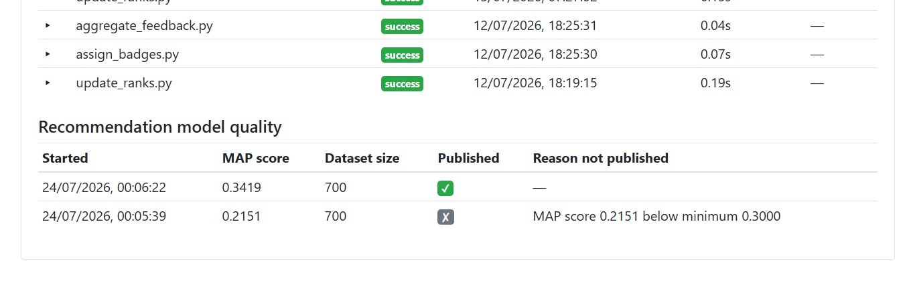
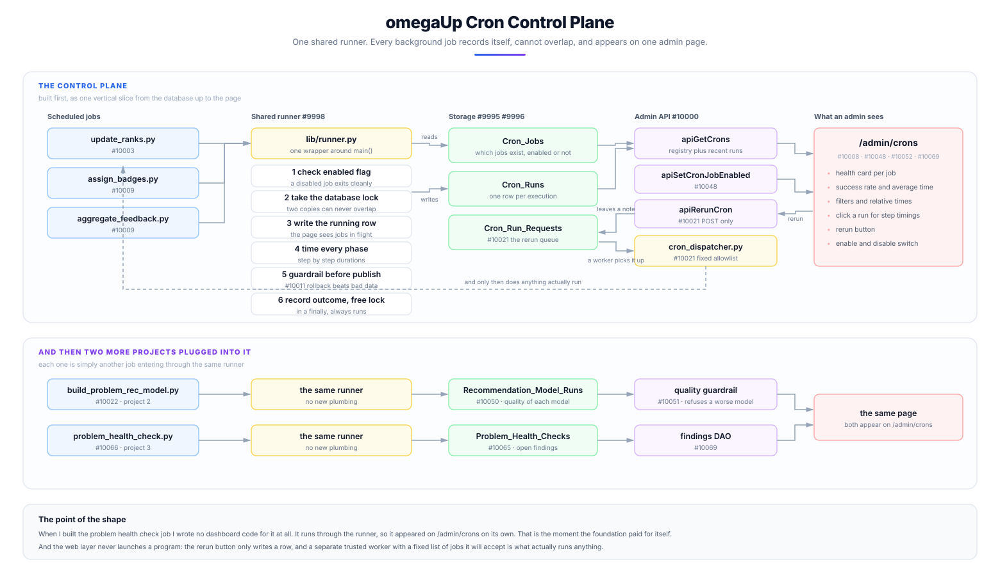

This is the short version of what I built for omegaUp over the summer. The long version, with the reasoning behind each decision and the parts that went wrong, is in the project report, and every pull request and issue I opened is listed on the pull requests page.
What was wrong
omegaUp runs a small set of Python scripts on a schedule overnight. They recompute the rankings, hand out badges, aggregate the feedback students leave on problems, and train the model that suggests what to solve next. Nobody was watching any of it. There was no record that a job had run at all, so when one died halfway through, the first sign would be a student noticing days later that a problem they had solved had never counted. Nothing stopped two copies of the same job running at once either, and when that happens nothing raises an error. It quietly produces wrong data and carries on. An admin who wanted to rerun a job needed shell access to a production server to do it.
While reading omegaUp's production deployment repository I found a commit from December 2021 saying "Make update-ranks only run once a day for now". The "for now" had been holding for five years. In the same afternoon I found that the recommendation model is never trained in production at all, because that job was simply never added to the schedule.
What I built
Three things, sharing one foundation.
A control plane for the cron jobs. Two new tables record every job the platform has and
every time one of them ran. A shared runner wraps each job so that it writes itself into that
history, takes a database lock so two copies can never overlap, times each step separately,
and records how the run ended even when it crashed. An admin page at /admin/crons shows all
of it, and a button there lets an admin rerun a job without touching a server.
Scheduled training for the recommendation model. Every run now records how good the model it produced was, and a guardrail refuses to publish a model that falls below a floor or that is measurably worse than the one it would replace.

Nightly problem health checks. A job that looks for problems which silently stopped working: submissions coming back as system errors, public problems with no submission languages enabled, problems nobody has ever solved, and retired problems still visible to students. This third project needed no dashboard code of its own. It runs through the same shared runner, so it appeared on the admin page by itself, which is the moment the foundation paid for building.

Where it stands
Thirty one pull requests between 26 May and 3 August, each with an issue written before it, and seventeen of them merged during the coding period. The whole foundation is on main: the registry and history tables, the data access layer, the admin API, the health checks table, and the reliability fixes to the scripts that were already there. The shared runner is approved and waiting to be merged, with four more pull requests sitting directly behind it, and the rest are stacked drafts that surface one at a time as the one below each of them lands.
What sets the pace now is review time rather than code, which is a real constraint on a volunteer maintained project rather than a complaint. Nothing is half built and nothing is blocked on me.
In one paragraph
Before this summer, if a background job on omegaUp failed at three in the morning, nobody found out until a student complained. Now the run is written down, it cannot collide with itself, an admin can see it and rerun it from a web page without server access, and the two jobs most likely to publish bad data check their own work before they publish it.